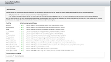
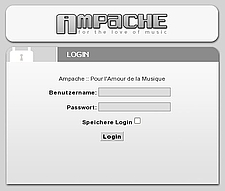

Ampache
Dieser Artikel wurde für die folgenden Ubuntu-Versionen getestet:
Ubuntu 14.04 Trusty Tahr
Artikel für fortgeschrittene Anwender
Dieser Artikel erfordert mehr Erfahrung im Umgang mit Linux und ist daher nur für fortgeschrittene Benutzer gedacht.
Zum Verständnis dieses Artikels sind folgende Seiten hilfreich:
Ampache  zählt zu den ältesten Streaming-Servern und wird immer noch aktiv entwickelt. Wer sich nun fragt, wozu man überhaupt einen Streaming-Server benötigt: damit lässt sich die auf dem Server gespeicherte Musik bequem im lokalen Netzwerk (LAN) oder auch über das Internet verteilen. Man sollte einen solchen Server aber nicht mit einem Internetradio verwechseln. Während letzteres eine "Sendung" ausstrahlt, verteilt ersterer Musik (als Playlist) nur auf eine konkrete Nutzeranforderung. Diese könnte z.B. lauten: spiele das Album X von Interpret Y ab.
zählt zu den ältesten Streaming-Servern und wird immer noch aktiv entwickelt. Wer sich nun fragt, wozu man überhaupt einen Streaming-Server benötigt: damit lässt sich die auf dem Server gespeicherte Musik bequem im lokalen Netzwerk (LAN) oder auch über das Internet verteilen. Man sollte einen solchen Server aber nicht mit einem Internetradio verwechseln. Während letzteres eine "Sendung" ausstrahlt, verteilt ersterer Musik (als Playlist) nur auf eine konkrete Nutzeranforderung. Diese könnte z.B. lauten: spiele das Album X von Interpret Y ab.
Funktionen:
integrierte Benutzerverwaltung
automatische Konvertierung in verschiedene Formate und Bitraten (on-the-fly transcoding and downsampling)
Unterstützung für Cover
Bewertungssystem
Sortierung nach Interpret, Alben oder Bewertung
Flash-Audioplayer (falls kein AudioPlayer installiert ist)
skinfähige Weboberfläche mit Unterstützung verschiedener Sprachen
Alternative Streaming-Server sind im Artikel Musik verwalten zu finden.
Installation¶
Voraussetzungen¶
Ampache benötigt einen Webserver mit PHP (mind. Version 5.2) als auch die Datenbank MySQL (mind. Version 5.0). Im Folgenden wird der Webserver Apache vorausgesetzt. Weitere Informationen zur Installation sind dem Artikel LAMP zu entnehmen.
Ampache¶
Wer Ampache aus den offiziellen Paketquellen installiert, sollte beachten, dass das Programm der Sektion universe zugeordnet und damit keinerlei Sicherheitsaktualisierungen erhält. Dann kann eine manuelle Installation vorteilhafter sein.
Das folgende Paket muss installiert werden [1]:
ampache (universe)
 mit apturl
mit apturl
Paketliste zum Kopieren:
sudo apt-get install ampache
sudo aptitude install ampache
Während Apache und PHP als Abhängigkeit bei Nichtvorhandensein automatisch nachinstalliert werden, erfolgt dies bei MySQL nicht!
Während der Installation wird man aufgefordert, den Webserver neu zu starten. Dem sollte man zustimmen, da das Installationsskript auch Apache für Ampache konfiguriert.
Manuell¶
Man kann die jeweils aktuelle Version auch direkt von der Entwicklerseite auf Github  herunterladen und manuell installieren. Der entscheidende Vorteil: Ein auf diesem Weg installierter Ampache kann einfach aktualisiert werden (siehe Upgrade Ampache ).
herunterladen und manuell installieren. Der entscheidende Vorteil: Ein auf diesem Weg installierter Ampache kann einfach aktualisiert werden (siehe Upgrade Ampache ).
Die notwendigen Befehle zur Installation am Beispiel von Ubuntu 14.04 (VERSION bitte anpassen):
wget https://github.com/ampache/ampache/archive/VERSION.tar.gz -O ampache-VERSION.tar.gz sudo tar -xzf ampache-VERSION.tar.gz -C /var/www/html sudo mv /var/www/html/ampache-VERSION /var/www/html/ampache chown -R www-data:www-data /var/www/html/ampache chmod -R 777 /var/www/html/ampache/config
Konfiguration¶

Jetzt sind alle notwendigen Komponenten installiert und man kann mit dem Browser über die Adresse http://<SERVER-IP>/ampache oder http://localhost/ampache (letzteres nur bei einer lokalen Installation) die Einrichtung vornehmen. Zunächst stellt man die Sprache auf Deutsch ein und klickt auf "Start configuration". Diese erfolgt in 3 Schritten:
Auf der nächsten Seite gibt man das zuvor gesetzte MySQL Passwort ein. Es ist weiterhin empfehlenswert, den Haken für einen eigenen MySQL-Benutzer
ampachezu setzen. In diesem Falle setzt man auch für diesen ein Passwort. Mit einem Klick auf "Datenbank einfügen" geht es weiter zur nächsten Seite.Im zweiten Schritt geht es darum, eine Konfigurationsdatei für Ampache zu erstellen. Man kontrolliert die zuvor eingegebenen Daten nochmals und klickt auf "Schreibe Konfiguration". Wenn man alles richtig gemacht hat, sollte man angeboten bekommen, eine ampache.cfg.php herunter zu laden. Diese speichert man ab und kopiert sie dann mit Root-Rechten [2] auf dem Server nach /etc/ampache/ampache.cfg.php. Anschließend klickt man - wieder im Browser - auf "Prüfe Konfiguration". Wo vorher in rot "error" stand, sollte jetzt in grün "ok" stehen. Nun folgt "Weiter zu Schritt 3".
Hier gibt man ein Passwort für den Benutzer
adminein. Mit diesem Benutzer und dem gesetztem Passwort kann man sich dann zum ersten Mal anmelden. Damit ist die Basis-Konfiguration abgeschlossen.
Experten-Info:
Ampache verwendet standardmäßig Port 80, was aber über Listen Port-Nr. in /etc/ampache/ampache.conf und über die Weboberfläche geändert werden kann.
Benutzung¶

Unabhängig davon, ob man nur Musik hören oder Ampache konfigurieren möchte, ist eine Anmeldung Pflicht. Diese erfolgt über einen Webbrowser mit der Adresse http://<Server-IP>/ampache bzw. auf dem eigenen Rechner mit http://localhost/ampache. Wenn man noch keinen weiteren Benutzer eingerichtet hat, verwendet man dafür den Benutzer admin.
Musik hinzufügen¶
Schließlich muss man noch Musik der Datenbank hinzufügen. Links oben im Menü wählt man die Kategorie "Admin" aus und klickt auf "Einen Katalog hinzufügen". Anschließend gibt man einen beliebigen, kurzen Namen und den kompletten Pfad zum Medienordner ein. Wer einen lokalen Musik-Server betreiben möchte, muss diesen Ordner noch via Samba, NFS oder FTP freigeben, damit Benutzer dort auch eigene Musik hinterlegen können.
Wenn Pfade im eigenen Homeverzeichnis, wie beispielsweise /home/BENUTZERNAME/Musik/, nicht akzeptiert werden, muss man für diesen Ordner alle Rechte (777) setzen oder auf einen anderen Ordner, z.B. /media/Musik/, als Medienablage ausweichen.
Benutzer hinzufügen¶
Aus Sicherheitsgründen sollte man (als admin) einen weiteren, unprivilegierten Benutzer anlegen, der nur zum Abspielen der Mediendateien berechtigt ist.
Audioplayer¶
Prinzipiell eignet sich jeder AudioPlayer, der Streams wiedergeben kann, als Abspieler für Ampache - allerdings immer in Kombination mit einem Webbrowser bzw. der Weboberfläche. Mit welchem AudioPlayer man direkt (ohne Weboberfläche) auf Ampache zugreifen kann, ist dieser Tabelle zu entnehmen.
Amarok 2¶
Mit dem Audioplayer Amarok kann man auch direkt auf einen Ampache-Server zugreifen. Hierzu muss man unter "Einstellungen -> Amarok einrichten -> Internet-Dienste" das Ampache-Plugin aktivieren und anschließend seine Benutzerdaten sowie die IP des Servers (bei funktionierendem DNS geht es auch mit dem Hostnamen) eintragen.
Viridian¶
Viridian ist ein Client (Audioplayer) speziell für Ampache und ab Ubuntu 11.10 in den offiziellen Paketquellen enthalten. Folgendes Paket muss installiert werden:
viridian (universe)
mit apturl
Paketliste zum Kopieren:
sudo apt-get install viridian
sudo aptitude install viridian
Links¶
Update Ampache
- manuelle Aktualisierung, Blogbeitrag 10/2012All of your music anytime, anywhere, with Android and Ampache
- Transcoding-Konfiguration, 06/2010Ampache Music Streaming Server auf Ubuntu Server 9.10
 - Blogbeitrag, 01/2010
- Blogbeitrag, 01/2010Create a Web-Based Audio File Manager and Audio Server with Ampache
- Blogbeitrag, 03/2008
- Erstellt mit Inyoka
-
 2004 – 2017 ubuntuusers.de • Einige Rechte vorbehalten
2004 – 2017 ubuntuusers.de • Einige Rechte vorbehalten
Lizenz • Kontakt • Datenschutz • Impressum • Serverstatus -
Serverhousing gespendet von